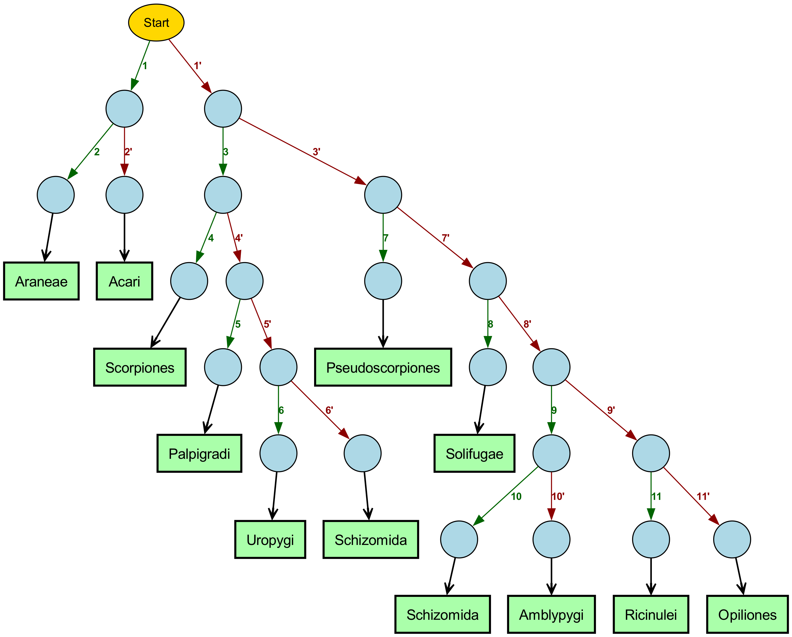

This page shows a simplified edge-labeled representation of the "Key to the Orders of Arachnida" from "Borror and DeLong's Study of Insects". This representation places couplet numbers on the edges and descriptions in the nodes, matching how taxonomists use dichotomous keys in practice.
The visualization below shows the edge-labeled tree structure of the Arachnida key. Each node contains descriptive content, and the edges are labeled with couplet numbers (e.g., 1, 1', 2, 2'). This representation closely aligns with how taxonomists use dichotomous keys in practice.

| Feature | Description |
|---|---|
| Edge Labels | Couplet numbers (1, 1', 2, 2', etc.) appear on the edges rather than in the nodes |
| Node Content | Nodes contain only descriptive characteristics without couplet numbers |
| Starting Point | A gold "Start" node indicates where to begin the identification process |
| Edge Colors | Non-prime couplets (1, 2, 3) are green; Prime couplets (1', 2', 3') are red |
| Terminal Nodes | Green nodes with larger, bold text clearly display the order names (Araneae, Acari, etc.) |
| Navigation Flow | Follow edges with couplet numbers from the start to a terminal node |
To identify an arachnid specimen using this tree:
This representation aligns with traditional dichotomous keys, where taxonomists navigate between couplets by their numbers rather than by traversing a binary yes/no tree. The edge labels (couplet numbers) serve as navigational aids, while the node content focuses on the actual characteristics of the specimen.
| Couplet | Description |
|---|---|
| 1 | Opisthosoma (abdomen) unsegmented or, if segmented, with spinnerets posteriorly on ventral side (Figures 5-5 and 5-8, ALS,PLS,PMS) |
| 1' | Opisthosoma distinctly segmented, without spinnerets |
| 2 | Opisthosoma petiolate (Figures 5-5 and 5-9 through 5-13) → Araneae |
| 2' | Opisthosoma not petiolate, but broadly joined to prosoma (Figures 5-15 through 5-22) → Acari |
| 3 | Opisthosoma with a tail-like prolongation that is either thick and terminating in a sting (Figure 5-3) or slender and more or less whiplike (Figure 5-4A,B); mostly tropical |
| 3' | Opisthosoma without a tail-like prolongation or with a very short leaflike appendage |
| 4 | Opisthosoma ending in a sting (Figure 5-3); first pair of legs not greatly elongated; second ventral segment of opisthosoma with a pair of comblike organs → Scorpiones |
| 4' | Opisthosoma not ending in a sting; first pair of legs longer than other pairs (Figure 5-4A,B); second ventral segment of opisthosoma without comblike organs |
| 5 | Pedipalps slender, similar to legs (Figure 5-4A); minute forms, 5 mm or less in length → Palpigradi |
| 5' | Pedipalps usually much stouter than any of the legs (Figure 5-4B); mostly larger forms |
| 6 | With two median eyes on a tubercle anteriorly and a group of three eyes on each lateral margin; tail long, filiform, and many-segmented; pedipalps nearly straight or curved mesad, extending forward, and moving laterally (Figure 5-4B); body blackish, more than 50 mm in length → Uropygi |
| 6' | Eyes lacking; tail short, one- to four-segmented; pedipalps arching upward, forward, and downward and moving vertically; body yellowish or brownish, less than 8 mm in length → Schizomida |
| 7 | Pedipalps chelate (pincerlike) (Figure 5-23); body more or less oval, flattened, usually less than 5 mm in length → Pseudoscorpiones |
| 7' | Pedipalps raptorial or leglike, but not chelate; body not particularly flattened; size variable |
| 8 | Chelicerae very large, usually about as long as prosoma, and extending forward, and body slightly narrowed in middle (Figure 5-4C); color pale yellow to brownish; length 20 to 30 mm; mostly nocturnal desert forms occurring in western United States → Solifugae |
| 8' | Without the preceding combination of characters |
| 9 | First pair of legs very long, with long tarsi; opisthosoma constricted at base; mainly tropical |
| 9' | First legs similar to the others and (except in the Opiliones) not usually long; opisthosoma not particularly constricted at base |
| 10 | Prosoma longer than wide, lateral margins nearly parallel, and with a transverse membranous suture in caudal third; opisthosoma with a very short terminal appendage; length 5-8 mm (see also couplet 6') → Schizomida |
| 10' | Prosoma wider than long, lateral margins rounded or arched, and without a transverse suture; opisthosoma without a terminal appendage; length variable, up to about 50 mm → Amblypygi |
| 11 | Orange-red to brown arachnids, about 3 mm in length, with broad flap at anterior end of prosoma concealing chelicerae; legs not unusually long, animal somewhat mitelike or ticklike in appearance; recorded from Rio Grande Valley of Texas → Ricinulei |
| 11' | Size and color variable, but without broad flap at anterior end of prosoma covering chelicerae; legs variable in length, often very long and slender (Figure 5-14); widely distributed → Opiliones |